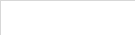
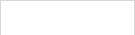

采购来料

当前扫码明细

二维码
登记数量
登记总重

实际数量

实际总重(g)
FL240805003
400
41,040
400
41,040
FL240805002
400
41,040
402
41,040

FL240805001
400
41,040

400
41,040
批次：3 数量：1,202 重量(g)：123,120
1.对物料二维码的具体校验
a.校验本次扫描的'物料二维码'对应的'采购订单'是否非空
a1.空：结束全部校验；仅返回Toast提示"未关联采购订单的物料"
a2.非空：通过本次校验
b.校验本次扫描的'物料二维码'是否已存在于[辅料仓库系统>>库存明细]中
a1.存在：结束全部校验；仅返回Toast提示"已存在登记：对应登记日期"，例'已存在登记：2024/10/23'
a2.不存在：通过本次校验
c.校验本次扫描的'物料二维码'是否存在于当前扫码明细中
c1.已存在
c1_1.返回Toast提示：重复添加
c1_2.对应'物料二维码'行选中并高亮
i.底部编辑面板切换成对应选中行信息( 未编辑状态 )
c2.未存在
c2_1.将'物料二维码'补充至当前扫码明细的清单中
i.二维码、登记数量：均以[辅料仓库系统>>辅料标签]下标签明细中同名字段取值
ii.登记总重：以[辅料仓库系统>>辅料标签]下标签明细中'单个克重(g)' * 登记数量
iii.实际数量：按'登记数量'初始化值
iv.实际总重(g)：按'登记总重'初始化值
v.补充位置：与排序逻辑一致
c2_2.返回Toast提示：添加成功
c2_3.对应'物料二维码'行选中并高亮
i.底部编辑面板切换成对应选中行信息( 未编辑状态 )
2.对料箱二维码的具体校验
a.校验当前扫码明细中数据非空
a1.为空：结束全部校验；仅返回Toast提示"请先扫描物料后绑定料箱"
a2.非空：通过本次校验
b.校验当前扫码明细中单个二维码对应的'实际数量'＞0
b1.存在 '数量 = 0'：结束全部校验
b1_1.返回Toast提示：请输入物料数量
b1_2.将清单中首个'数量=0'的'物料二维码'行选中并高亮
b2.全部 '数量 > 0'：通过本次校验
c.校验识别料箱对应于[基础数据系统>>仓库设置>>辅料箱管理]中的"作为配箱"的值
c1.作为配箱==是：结束全部校验；仅返回Toast提示"配箱占用，无法存放来料"
c2.作为配箱==否：通过本次校验
d.通过全部校验
d1.将当前扫码明细中的'物料二维码'生成对应数据行至[辅料仓库系统>>库存明细]中
d1_1.'二维码'、'物料编码'、'物料名称'、'规格'、'颜色'、'单位'、'登记数量'、'备注'、'生产日期'、'采购订单'、'供应商'、'适用订单'、'适用款'：以[辅料仓库系统>>辅料标签]下标签明细中对应物料二维码的相关同名字段进行赋值
d1_2.'单个克重'：以当前扫码清单中的"实际总重(g)/实际数量"进行赋值
d1_3.'实际数量'：以当前扫码清单中的"实际数量"进行赋值
d1_4.'所属料箱'：以当前识别的"料箱二维码"进行赋值
d1_5.'首次登记'：以当前日期(年/月/日)进行赋值
d2.将当前扫码明细中的'物料二维码'对应于[辅料仓库系统>>辅料标签]下标签明细中数据进行修改
d2_1.'登记状态'置为已登记
d3.按当前扫码明细中的行数对应生成记录至[辅料仓库系统>>入库日志]下日志明细中
d3_1.'二维码'、'物料编码'、'物料名称'、'规格'、'颜色'、'单位'：以[辅料仓库系统>>辅料标签]下标签明细中对应物料二维码的相关同名字段进行赋值
d3_2.'入库数量'、'库存数量'：均以当前扫码明细中对应'实际数量'赋值
d3_3.'操作时间'、'操作人'：以当前时间及账户赋值
d3_4.'类型'：固定写作'采购入库'
d3_5.'关联单据'：以[辅料仓库系统>>辅料标签]下标签明细中对应物料二维码的'采购订单'进行赋值
d4.按当前扫码明细中二维码对应的同一'SKU+采购单'的"实际数量"汇总后回写至[物料采购系统>>辅料采购清单]的'采购入库'
d4_1.采购入库=原'采购入库'+本次Σ'实际数量'
d5.返回Toast提示：绑定成功
d6.当前页面的"提交状态"置为'提交完成'，即展示按钮【已绑料箱，清空当前】

拉链(玉米牙，无上下止)

70CM
移除
编辑
确认

实际总重(g)

实际数量
41,040
400
底部选中行编辑面板 (每切换选中时初始化为 非编辑状态 )
1.物料名称：跟随选中行物料二维码的'物料名称'
a.限制字数展示(仅占屏幕宽度50%)，超出部分使用'…'拼接
2.物料规格：跟随选中行物料二维码的'物料规格'
a.限制字数展示(仅占屏幕宽度50%)，超出部分使用'…'拼接
3.【移除】
a.点击后，对应“物料二维码”从当前扫码明细清单中移除
b.选中高亮行自动下移一行
b1.若为末尾行，当前清单无选中高亮行
4.实际总重(g)：跟随选中行二维码于清单中对应的'实际总重'
a.非编辑状态：文本展示
b.可编辑状态：编辑域
b1.格式限制：正数，限制保留1位小数
5.实际数量：跟随选中行二维码于清单中对应的'实际数量'
a.非编辑状态：文本展示
b.可编辑状态：编辑域
b1.格式限制：正数，仅整数
5.【编辑】：将"实际总重(g)"和"实际数量"的状态由 非编辑状态 转为 可编辑状态
6.【确认】
a.校验编辑域＞0，否则Toast提示：请输入实际数量
b.通过校验
b1.将"实际总重(g)"和"实际数量"的状态由 可编辑状态 转为 非编辑状态
b2.对应修改选中行"实际总重(g)"和"实际数量"的值
b3.重新合计当前扫码明细的"数量"和"重量(g)"
当前扫码清单
1.合计取值
a.批次：合计"二维码"行数
b.数量：合计"二维码"对应的'实际数量'
b1.注意使用千位分隔符展示
c.重量(g)：合计"二维码"对应的'实际总重'
c1.注意使用千位分隔符展示
2.排序依据：①规格 ②颜色 ③二维码
3.清单选中交互
a.清单行能否选中跟随当前页的"提交状态"
a1.未提交：支持选中
a2.提交完成：无法选中
b.选中限制：仅可选中一行
c.选中标识：整行底色使用橙色标识
4.【已绑料箱，清空当前】
a.按钮是否可见跟随当前页的"提交状态"
a1.未提交：隐藏该按钮
a2.提交完成：展示该按钮
b.点击效果
b1.清空当前扫码明细下全部数据
b2.当前页面的"提交状态"置为'未提交'，即隐藏当前按钮
扫码区域：
1.编辑域：提示字如图所示
a.调用编辑键盘：每失焦后进入逻辑2(自动清除编辑域文本)
b.调用扫码头：直接按获取结果进入逻辑2(无须填充编辑域)
2.按下述顺序识别结果
a.自动处理：若当前页的"提交状态==提交完成"
a1.清空当前扫码明细下全部数据
a2.当前页面的"提交状态"置为'未提交'，即隐藏对应按钮
b.识别结果为[辅料仓库系统>>辅料标签]下标签明细中存在的物料二维码：见右侧具体逻辑
c.识别结果为[基础数据系统>>仓库设置>>辅料箱管理]内存在的料箱二维码(FLLX)：见右侧具体逻辑
d.识别结果为其它：结束校验；仅返回Toast提示"无法识别的二维码"
已绑料箱，清空当前